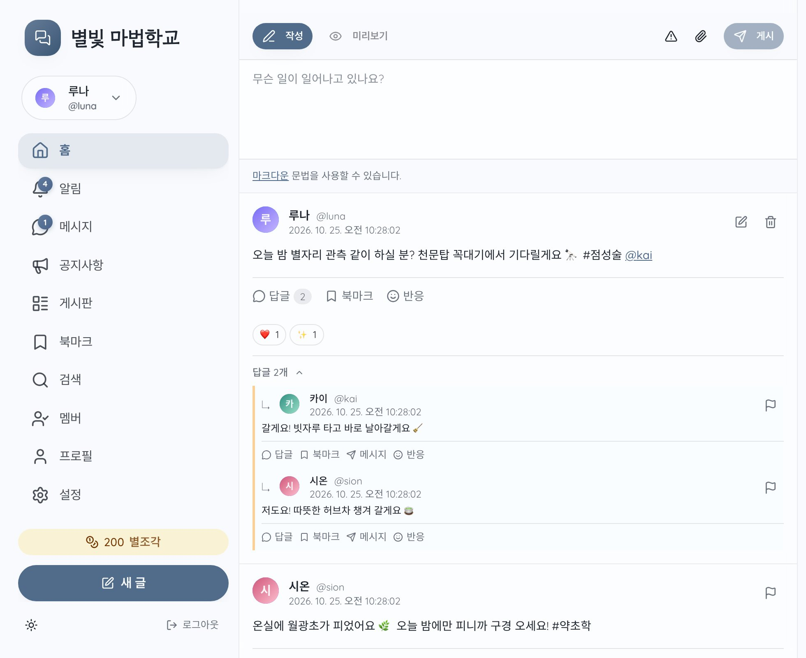
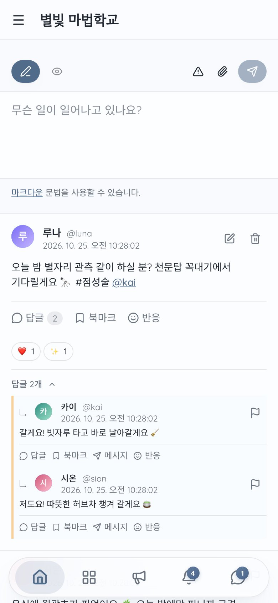
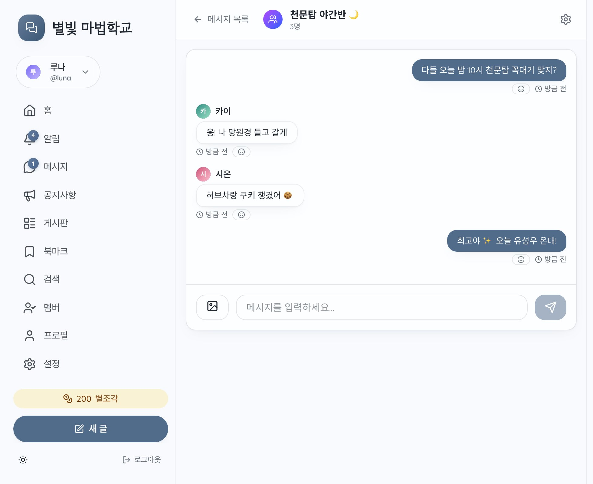
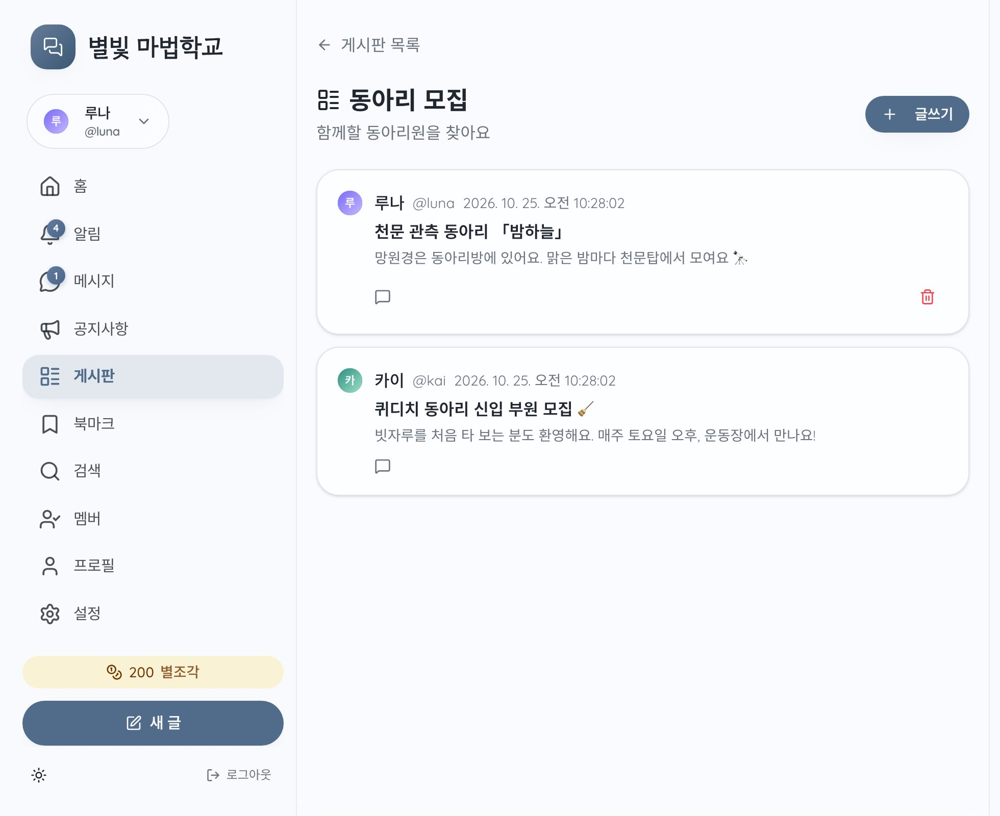
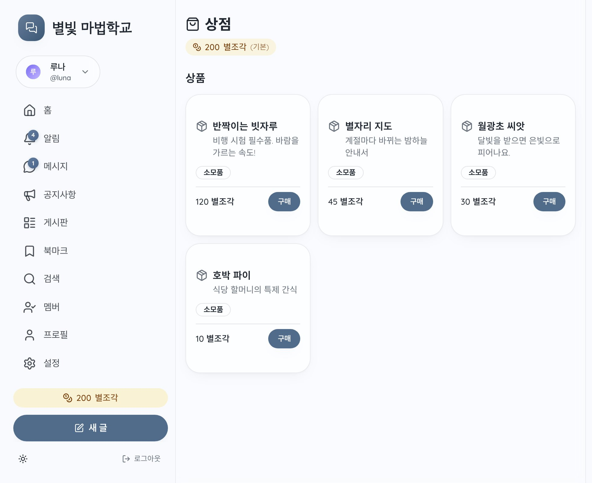
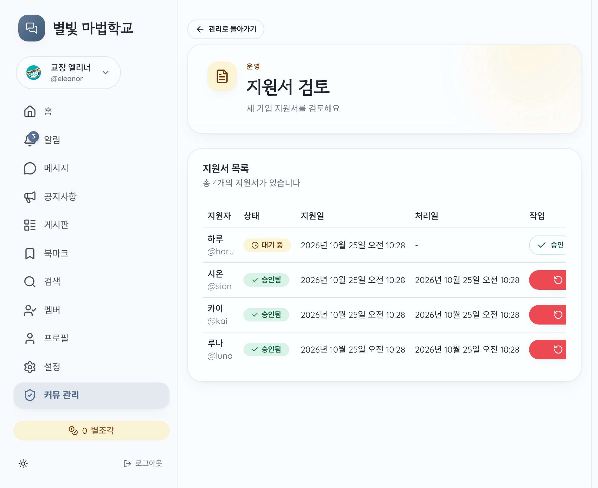

커뮹의 다음 모습
커뮤를 내 나루 주소에서 여세요
커뮹!은 나루에 설치해서 쓰는 타임라인 기반 커뮤 앱이에요. 내주소.naru.pub에서 커뮤를 열고, 디자인부터 구성까지 원하는 대로 바꿀 수 있어요.


둘러보기




화면 속 커뮤와 캐릭터는 예시예요.
커뮹으로 할 수 있는 것
-
타임라인
글과 답글, 반응, 북마크, 해시태그, 내용 경고, 예약 게시, 공지까지 커뮤의 일상이 한 줄로 흘러요.
-
캐릭터 프로필
한 계정으로 여러 프로필을 만들고, 함께 쓰는 프로필도 나눠 가질 수 있어요.
-
쪽지와 그룹 채팅
1:1 쪽지와 그룹 채팅이 실시간으로 오가요.
-
게시판
타임라인과 따로, 제목이 있는 글을 모아 두는 게시판을 만들어요.
-
상점과 명령어
화폐와 아이템, 그리고
/roll 2d6같은 슬래시 명령어로 커뮤 안의 놀이를 굴려요. -
지원서와 운영
모집 기간, 지원서 검토, 모더레이터, 뮤트와 신고까지 운영 도구가 들어 있어요.
새 글과 쪽지 알림은 나루 앱(iOS, Android, macOS)으로 받아요.
설치하기
-
나루에 가입해요
naru.pub에서 원하는 주소를 정하면, 그 주소가 내 사이트가 돼요. 커뮤는 내주소.naru.pub에서 열려요. 커뮤 전용 계정을 새로 만들어도 좋아요.
-
서포터 플랜에 가입해요
커뮹은 나루의 데이터베이스를 써서, 설치하는 사람에게 서포터 플랜이 필요해요. 커뮤에 들어오는 멤버는 서포터가 아니어도 돼요.
-
커뮹 템플릿을 설치해요
나루 게시판의 커뮹! 템플릿에서 내 사이트에 적용을 눌러요. 커뮹은 사이트 전체(/)에 설치되고, 새 버전이 나오면 알려 주기·자동 업데이트·받지 않기 중에서 골라요.
사이트에 원래 있던 파일 중 겹치는 것은
/.backup/에 보관돼요. -
커뮤를 열어요
내주소.naru.pub/admin에서 사이트 소유자로 로그인하고 커뮤 이름과 기간을 정해요. 이어서 회원으로도 로그인하고 운영자로 연결을 누르면, 첫 프로필과 함께 커뮤의 운영자가 돼요.
-
꾸미고 멤버를 모아요
/admin/settings에서 배너와 테마 색, 모집 기간을 정해요. 멤버는 나루 계정으로 로그인해 /apply에서 지원하고, 운영진이 /admin/applications에서 승인해요. 링크를 공유해 멤버를 모아 보세요.
-
업데이트해요
새 버전은 설치한 템플릿 에서 업데이트해요. 커뮤의 글과 회원은 그대로고, 직접 고친 파일은 보관한 뒤 바꿔요. 업데이트가 실패하면 원래대로 되돌려요.
자주 묻는 질문
- commu.ng에서 운영 중인 커뮤는 어떻게 되나요?
- 종료일까지 지금처럼 commu.ng에서 운영할 수 있어요. 새 커뮤는 나루에서 열어요.
- 커뮹 계정으로 나루에 로그인할 수 있나요?
- 나루는 별도 서비스라 새로 가입해야 해요. 가입은 원하는 주소를 정하는 것으로 끝나요.
- 멤버도 서포터 플랜이 필요한가요?
- 아니요. 커뮹을 설치하는 사람만 필요해요. 멤버는 나루 계정만 있으면 돼요.
- 얼마나 담을 수 있나요?
- 사이트마다 이미지 같은 미디어는 250 MiB, 파일 10,000개까지, 글과 쪽지 같은 데이터는 100 MiB까지예요. 그림을 많이 올리는 커뮤는 미디어 용량을 먼저 살펴 주세요.
- 데이터는 어떻게 보관되나요?
- 업데이트가 데이터베이스를 바꾸기 전에 나루가 복원 지점을 남겨요. 나루 제어판의 데이터베이스 → 복원 지점에서 내려받거나 되돌릴 수 있어요.
- 디자인을 바꿀 수 있나요?
- 네. 사이트의 파일을 직접 고치면 돼요. 업데이트할 때 고친 파일은 보관해 두니, 고친 부분을 다시 옮겨 오면 돼요.
- 설치하다 막히면 어디에 물어보나요?
- 커뮹 디스코드에 물어봐 주세요. 새 소식도 여기서 알려 드려요.
- 소스를 볼 수 있나요?
- 커뮹은 AGPL-3.0 오픈 소스예요. commu-ng/web 에서 볼 수 있어요.